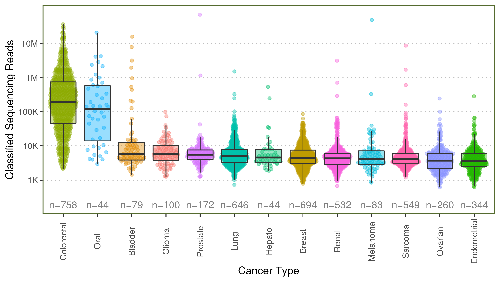
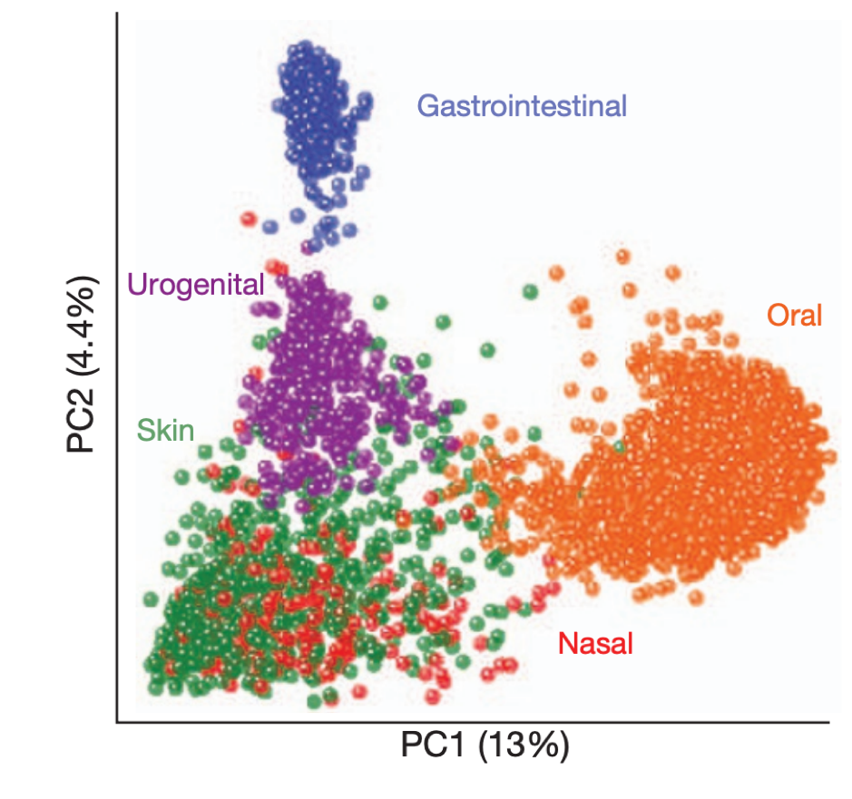
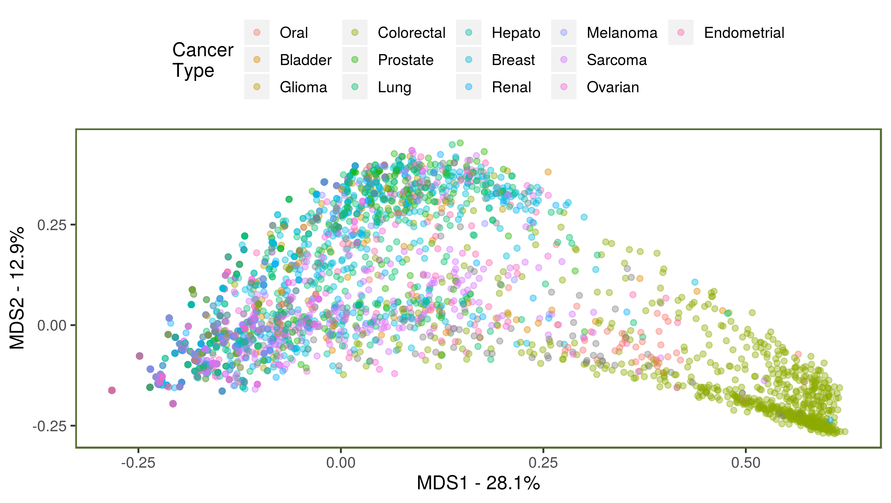

The Search for Pathogens in 100,000 Genomes Project Data
Gihawi, A. 1, 
@AbrahamGihawi
A.Gihawi@uea.ac.uk
Hurst, R.1 Leggett, R.M.2 Cooper, C.S.1 Brewer, D.S.1,2 Genomics England Research Consortium3
1 Bob Champion Research and Education Building, University of East Anglia, Norwich, UK
2 Earlham Institute, Norwich, UK
3 Genomics England, London, UK
Background
The involvement of H. pylori with gastric carcinoma[1] and the success of the Human papillomavirus vaccine in preventing cervical cancers[2] are testament to the prominent role that pathogens play in cancer.
In whole genome sequencing, microorganisms in close proximity to the human sample can be incidentally sequenced[3]. Therefore, the 100,000 genome project data provides a rich resource for detecting microorganisms and linking them to disease.
We benchmarked software to devise the best approach for cancer whole genome sequence metagenomics. The top performing pipelines are provided in a tool called SEPATH [4] which is currently being applied to all cancer samples in the 100,000 genomes project. SEPATH performs the following:
- Extracts unmapped reads from BAM files
- Quality trimming & human read removal
- Metagenomic classification - Kraken/mOTUs2[5, 6]
Summary: Bacteria/viruses exist naturally in our bodies but some are linked with cancer. These are sequenced alongside human DNA. We developed an approach to retain and classify non-human sequences.
Objectives
- ✅ Develop pathogen detection pipeline
- 📈 Run pipeline on cancer sequence data
- 💹 Characterise contamination
- ⌛ Investigate associations with disease
Methods
SEPATH was run on all cancer samples (v6, n=5,311).
Pathogenic Read Counts:
Genera present in \(\leq15\) samples were removed from analysis and data filtered to only fresh-frozen PCR-free samples of the most common cancer types (n=4,305).
Principal Coordinates Analysis (PCoA):
A minimum read threshold of 50 was applied to genera from the fresh-frozen PCR-free dataset containing all cancers (n=4,527). Genera and samples without reads were removed and Jaccard distances were obtained using the vegan package.
Contaminant Importance:
Potential contaminants were investigated on unfiltered data using Boruta feature selection[7] to predict technical variables: preparation method, library type, tissue source, handling trust, DNA amount, genome build, coverage homogeneity, fragment size, AT drop, GC drop, chimeric percentage, QC status, sample concentration.
Summary: For 5,311 cancer samples, we used mathematical approaches to determine whether each microorganism occurred in the patient or was introduced during processing.
Results
Classified Pathogen Reads Per Sample
Colorectal and oral cancers demonstrate higher numbers of classified sequencing reads compared to other tumours. Background numbers of reads are present accross all tumour types (Figure 1). 786/1,534 Genera remained after filtering.

Figure 1: Number of reads classified at genus level per tumour sample (n=4,305)
Sample Similarity
What we expect:
We expect body site to separate each sample as demonstrated in the human microbiome project[8] (Figure 2).

Figure 2: Principal coordinates analysis from the human microbiome project. Point colour denotes sampling site. (bray curtis distance, 16s ribosomal RNA gene classification, genus level). Adapted from the human microbiome project consortium, 2012 [8].
What we found:
Examining relationships between cancer samples in the 100,000 genomes project shows that apart from colorectal, samples appear highly mixed suggesting background contamination (Figure 3).

Figure 3: Principal coordinates analysis showing sample similarity (Jaccard distance).
Top Potential Contaminants
429 Genera demonstrated utility in predicting technical variables. The top 15 are compared to a recent meta-analysis contaminants below[9].
| Genus |
Importance Ranking |
Contaminant in Literature |
|---|---|---|
| Enterococcus | 1 | ✅ |
| Curvibacter | 2 | ✅ |
| Methylobacterium | 3 | ✅ |
| Sphingomonas | 4 | ✅ |
| Variovorax | 5 | |
| Actinomyces | 6 | ✅ |
| Bradyrhizobium | 7 | ✅ |
| Burkholderia | 8 | ✅ |
| Cutibacterium | 9 | |
| Hammondia | 10 | |
| Kocuria | 11 | |
| Micrococcus | 12 | |
| Ralstonia | 13 | ✅ |
| Sphingobium | 14 | ✅ |
| Streptococcus | 15 | ✅ |
Conclusions
- 1,534 unique genera reported so far
- Contamination can occur at any point from sample collection to analysis
- Efforts are being made in differentiating real results from contaminants to denoise sparse metagenomic data and enable interpretation of the results
Summary: Finding pathogens in cancer sequences is like finding a needle in a haystack. We need develop an approach to make it easier by removing the hay.
Future Tasks
- Introduce covariates (age, gender, ethnicity) in the method to detect contaminants
- Determine threshold of contanimant removal that produces the greatest cancer type separation
- Produce a final list of high confidence findings to share with other GECIPs
Acknowledgements
Thanks to participants, staff and to Big C for making this research possible. This research was made possible through access to the data and findings generated by the 100,000 Genomes Project; http://www.genomicsengland.co.uk

Note: This poster was produced in R. Details and code to reproduce this poster can be found: https://github.com/Agihawi/Gel_Conference_Poster_1
References
1. Plummer M, Martel C de, Vignat J, Ferlay J, Bray F, Franceschi S. Global burden of cancers attributable to infections in 2012: A synthetic analysis. The Lancet Global Health. 2016;4:e609–16.
2. Hibbitts S, Tristram A, Beer H, McRea J, Rose B, Hauke A, et al. UK population based study to predict impact of hpv vaccination. J Clin Virol. 2014;59:109–14. doi:10.1016/j.jcv.2013.12.002.
3. Magiorkinis G, Matthews PC, Wallace SE, Jeffery K, Dunbar K, Tedder R, et al. Potential for diagnosis of infectious disease from the 100,000 genomes project metagenomic dataset: Recommendations for reporting results. Wellcome Open Research. 2019;4.
4. Gihawi A, Rallapalli G, Hurst R, Cooper CS, Leggett RM, Brewer DS. SEPATH: Benchmarking the search for pathogens in human tissue whole genome sequence data leads to template pipelines. Genome Biol. 2019;20:208. doi:10.1186/s13059-019-1819-8.
5. Wood D, Salzberg S. Kraken - ultrafast metagenomic sequence classification using exact alignments. Genome Biol. 2014;15.
6. Milanese A, Mende DR, Paoli L, Salazar G, Ruscheweyh HJ, Cuenca M, et al. Microbial abundance, activity and population genomic profiling with mOTUs2. Nat Commun. 2019;10:1014. doi:10.1038/s41467-019-08844-4.
7. Kursa MB, Rudnicki WR. Feature selection with the Boruta package. Journal of Statistical Software. 2010;36:1–13. http://www.jstatsoft.org/v36/i11/.
8. Human Microbiome Project C. Structure, function and diversity of the healthy human microbiome. Nature. 2012;486:207–14. doi:10.1038/nature11234.
9. Eisenhofer R, Minich JJ, Marotz C, Cooper A, Knight R, Weyrich LS. Contamination in low microbial biomass microbiome studies: Issues and recommendations. Trends Microbiol. 2019;27:105–17. doi:10.1016/j.tim.2018.11.003.